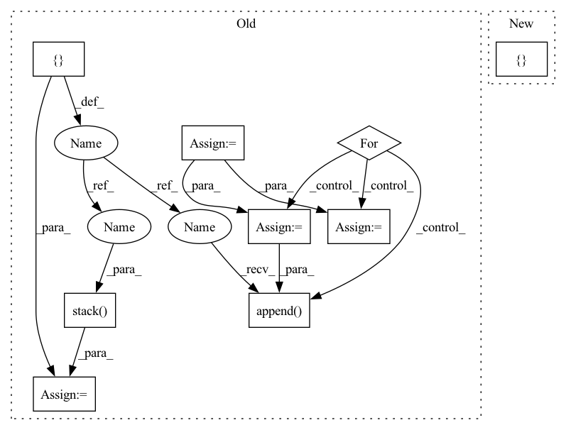

Pattern ID :9232

Before Change
def forward(self, q, r):
x = q + self.num_q * r
Mvt = self.Mv.unsqueeze(0)
p = []
Mv = []
for qt, xt in zip(q.permute(1, 0), x.permute(1, 0)):
kt = self.k_emb_layer(qt)
vt = self.v_emb_layer(xt)
wt = torch.softmax(torch.matmul(kt, self.Mk), dim=-1)
// Read Process
rt = (wt.unsqueeze(-1) * Mvt).sum(1)
ft = torch.tanh(self.f_layer(torch.cat([rt, kt], dim=-1)))
pt = torch.sigmoid(self.p_layer(ft)).squeeze()
// Write Process
et = torch.sigmoid(self.e_layer(vt))
Mvt = Mvt * (1 - (wt.unsqueeze(-1) * et.unsqueeze(1)))
at = torch.tanh(self.a_layer(vt))
Mvt = Mvt + (wt.unsqueeze(-1) * at.unsqueeze(1))
p.append(pt)
Mv.append(Mvt)
p = torch.stack(p, dim=1)
Mv = torch.stack(Mv, dim=1)
return p, Mv
After Change
f = torch.tanh(
self.f_layer(
torch.cat(
[
(w.unsqueeze(-1) * Mv[:, :-1]).sum(-2),
k
],
dim=-1
)
)
In pattern: SUPERPATTERN
Frequency: 3
Non-data size: 9
Instances
Fragment ID: 33317116
Project Name: hcnoh/knowledge-tracing-collection-pytorch
Commit Name: c42b01b83dbe54e94f4294009fbfe8bd910e3638
Time: 2021-10-06
Author: rhc0624@gmail.com
File Name: models/dkvmn.py
M Class Name: DKVMN
N Class Name: DKVMN
M Method Name: forward(3)
N Method Name: forward(3)
M Parent Class: Module
N Parent Class: Module
M File Name: models/dkvmn.py
N File Name: models/dkvmn.py
M Start Line: 40
M End Line: 66
N Start Line: 50
N End Line: 87
'>
Before Change
def forward(self, q, r):
x = q + self.num_q * r
Mvt = self.Mv.unsqueeze(0)
p = []
Mv = []
for qt, xt in zip(q.permute(1, 0), x.permute(1, 0)):
kt = self.k_emb_layer(qt)
vt = self.v_emb_layer(xt)
wt = torch.softmax(torch.matmul(kt, self.Mk), dim=-1)
// Read Process
rt = (wt.unsqueeze(-1) * Mvt).sum(1)
ft = torch.tanh(self.f_layer(torch.cat([rt, kt], dim=-1)))
pt = torch.sigmoid(self.p_layer(ft)).squeeze()
// Write Process
et = torch.sigmoid(self.e_layer(vt))
Mvt = Mvt * (1 - (wt.unsqueeze(-1) * et.unsqueeze(1)))
at = torch.tanh(self.a_layer(vt))
Mvt = Mvt + (wt.unsqueeze(-1) * at.unsqueeze(1))
p.append(pt)
Mv.append(Mvt)
p = torch.stack(p, dim=1)
Mv = torch.stack(Mv, dim=1)
return p, Mv
After Change
batch_size = x.shape[0]
Mvt = self.Mv0.unsqueeze(0).repeat(batch_size, 1, 1)
Mv = [Mvt]
k = self.k_emb_layer(q)
v = self.v_emb_layer(x)
'>
Fragment ID: 33317117
Project Name: hcnoh/knowledge-tracing-collection-pytorch
Commit Name: c42b01b83dbe54e94f4294009fbfe8bd910e3638
Time: 2021-10-06
Author: rhc0624@gmail.com
File Name: models/dkvmn.py
M Class Name: DKVMN
N Class Name: DKVMN
M Method Name: forward(3)
N Method Name: forward(3)
M Parent Class: Module
N Parent Class: Module
M File Name: models/dkvmn.py
N File Name: models/dkvmn.py
M Start Line: 40
M End Line: 66
N Start Line: 50
N End Line: 87
'>
Before Change
lengths_list: List[int] = self.lengths().tolist()
N = max(lengths_list) if desired_length is None else desired_length
offset = 0
values = []
for length in lengths_list:
value = self.values()[offset : offset + length]
if length <= N:
padding_tensor = torch.full(
[N - length], padding_value, device=self.values().device
)
value = (
torch.cat((padding_tensor, value), 0)
if pad_from_beginning
else torch.cat((value, padding_tensor), 0)
)
else:
value = value[-N:] if chop_from_beginning else value[:N]
values.append(value)
offset += length
final_tensor = torch.stack(values)
return final_tensor
def lengths(self) -> torch.Tensor:
_lengths = _maybe_compute_lengths(self._lengths, self._offsets)
After Change
lengths_list: List[int] = self.lengths().tolist()
N = max(lengths_list) if desired_length is None else desired_length
return torch.ops.fbgemm.jagged_to_padded_dense(
self.values(), [self.offsets()], [N], padding_value
)
def lengths(self) -> torch.Tensor:
'>
Fragment ID: 33317118
Project Name: facebookresearch/torchrec
Commit Name: 52ddfd407a0e505682a053007893b3c24a158afa
Time: 2022-06-15
Author: joshuadeng@fb.com
File Name: torchrec/sparse/jagged_tensor.py
M Class Name: JaggedTensor
N Class Name: JaggedTensor
M Method Name: to_padded_dense(3)
N Method Name: to_padded_dense(5)
M Parent Class: Pipelineable
N Parent Class: Pipelineable
M File Name: torchrec/sparse/jagged_tensor.py
N File Name: torchrec/sparse/jagged_tensor.py
M Start Line: 321
M End Line: 378
N Start Line: 360
N End Line: 363